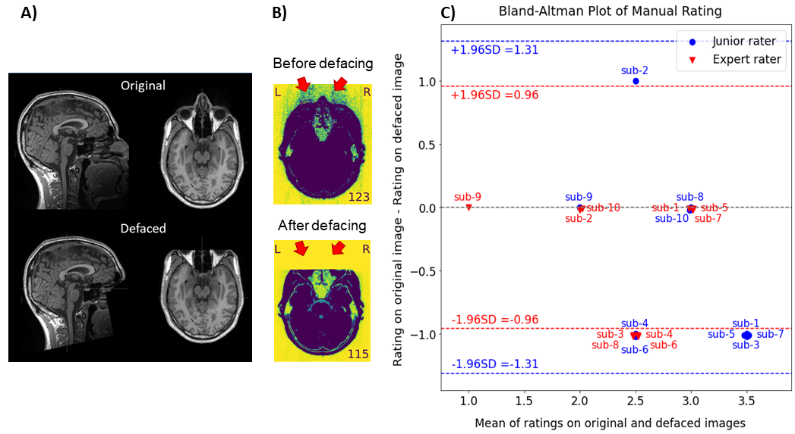

name: title layout: true class: center --- layout: false count: false .middle.center[ # Standardization in QA/QC **Parallel Session 3: Neuroimaging Quality control** <br /> <br /> ### Oscar Esteban #### CHUV | Lausanne University Hospital ###### [www.nipreps.org/presentations/2022-INCF-MRIQC](https://www.nipreps.org/presentations/2022-INCF-MRIQC/) ] --- layout: false count: false .middle.center[ # Standardization in QA/QC **Parallel Session 3: Neuroimaging Quality control** <br /> <br /> ### Oscar Esteban #### CHUV | Lausanne University Hospital ###### [www.nipreps.org/presentations/2022-INCF-MRIQC](https://www.nipreps.org/presentations/2022-INCF-MRIQC/) ] --- name: newsection layout: true .perma-sidebar[ <p class="rotate"> <a rel="license" href="http://creativecommons.org/licenses/by/4.0/"><img alt="Creative Commons License" style="border-width:0; height: 20px; padding-top: 6px;" src="https://i.creativecommons.org/l/by/4.0/88x31.png" /></a> <span style="padding-left: 10px; font-weight: 600;">Standardization in QA/QC</span> </p> ] --- # Outline .boxed-content[ .distribute.large[ * What is QA/QC? * Why should we care about QA/QC? * The *NiPreps* approach * Example ] ] --- # What is QA/QC? (a personal view) .pull-left[ .distribute.large[ * **Quality Control (QC)**: eliminate substandard data * **Quality Assessment (QA)**: ensure, monitor, and take actions so that all elements in the research workflow perform as expected and do not produce substandard data ] ] .pull-right[ <img align="right" style='margin-right: 50px; width: 100%;' src="https://journals.plos.org/plosone/article/figure/image?size=large&download=&id=10.1371/journal.pone.0184661.g001" /> ] --- # What is QA/QC? (problems/pitfalls) .boxed-content[ .distribute.large[ * What is *substandard data*? * Definition contingent on the QA checkpoint * Levels/metrics dependent on data specifics (i.e., adult vs. infant data) * Limited validity and reliability of metrics * Decision thresholds dependent on application/downstream analysis. * A experience-driven issue: * Exclusion criteria should be defined before acquisition ] ] --- # Consequence: lack of standardization .boxed-content[ .distribute.large[ * Scattered know-how * Heavily idiosyncratic and reliant on your experience and your lab's * Challenging automation * Specially to obtain solutions that generalize (sites, populations, species) * Implicit biases * Data sharing is typically done after QC ] ] --- # Presenting the QC-Book .boxed-content[ .distribute.large[ "[*Hands-on quality control of human and preclinical MRI data: from acquisition to post processing*](https://www.nipreps.org/qc-book)" ([nipreps.org/qc-book](https://www.nipreps.org/qc-book)) * Currently covering contents we presented at ISMRM'22 (London, UK): * Dataset QC (Jo Etzel) * Preclinical imaging QC (Eilidh MacNicol) * Automating QC of unprocessed data (Oscar Esteban) * A collaborative effort open to the community * Unrestricted dimensions: populations/species, modalities, applications, etc. ] ] --- # The *NiPreps* approach <p align="center"> <img src="https://media.springernature.com/full/springer-static/image/art%3A10.1038%2Fs41596-020-0327-3/MediaObjects/41596_2020_327_Fig1_HTML.png?as=png" width="90%" /><br /> (<a href="https://doi.org/10.1038/s41596-020-0327-3">Esteban et al., 2020</a>) </p> --- # MRIQC <p align="center"> <img src="https://mriqc.readthedocs.io/en/latest/_static/anatomical_workflow_source.svg" width="90%" /><br /> (<a href="https://doi.org/10.1371/journal.pone.0184661">Esteban et al., 2017</a>) </p> --- <p align="center"> <a href="https://doi.org/10.1038/s41592-018-0235-4"> <img src="../assets/fmriprep-workflow-final.svg" width="73%" /><br /> </a> <em>fMRIPrep</em> (<a href="https://doi.org/10.1038/s41592-018-0235-4">Esteban et al., 2019</a>) </p> --- # Plan ahead: SOPs .boxed-content[ .distribute.large[ * You want to have **Standard Operating Procedures**, a document: * prescribing all details of analysis, * particularly establishing QC/QA points and triggered actions, * establishing exclusion criteria, * accessible to all involved stakeholders. * Check out our [*MRIQC-SOPs* Project](https://github.com/nipreps/mriqc-sops) ] ] --- # Example <p align="center"> <p></p><br /> (<a href="https://doi.org/10.31219/osf.io/8mcyz">Provins et al., 2022</a>, pre-registration report in preparation) </p> --- .boxed-content[ .middle.center[ # Thanks! ### Join the NiPreps Community! \* If you know a Python developer on the job hunt, we are searching for a [junior software dev](https://recrutement.chuv.ch/vacancy/software-developer-for-radiology-department-272565.html) ] ]